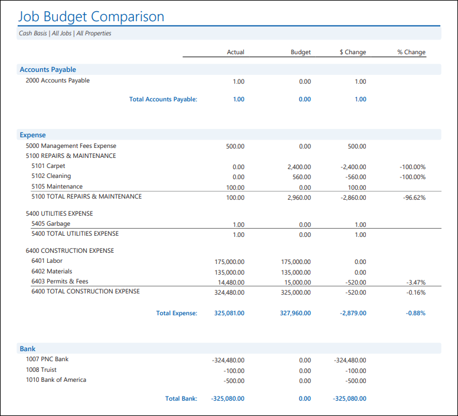
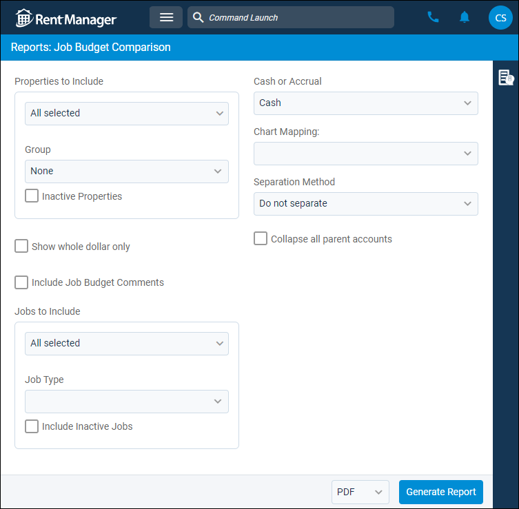
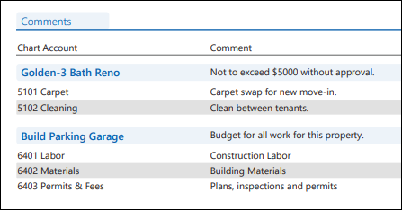

Source: https://rmxhelp.rentmanager.com/Topics/Express/Other/Reports/Job-Budget-Comparison.htm
Job Budget Comparison (Report)
The Job Budget Comparison report allows you to compare the budgeted amounts and the actual amounts that have been spent for one or more jobs. Further, the dollar and percentage differences display to allow you to see how money was spent on jobs. The budgeted amounts displayed in the report come directly from the job budget.
Related Privileges
| Group | Privilege | Column |
|---|---|---|
| Letter/Email Templates/Reports/Packets | Run reports | Enabled |
| Run accounting reports | Enabled |
Additionally, on the Reports tab, you must have access to Job Budget Comparison.
For more information, refer to Control User Access.
To view the Job Budget Comparison report, do the following:
-
Go to
 arrow_forward Accounting arrow_forward Job Costing arrow_forward Job Budget Comparison.
arrow_forward Accounting arrow_forward Job Costing arrow_forward Job Budget Comparison.
The Reports: Job Budget Comparison page displays. -
Adjust the report options as desired. Each option is described below.
-
Generate the report in your desired file format(s).
Related Preferences
Reports may look different depending on whether or not the Use modernized report style system preference is enabled. For more information, refer to General Report Options (System Preferences).

Report Options
The report options described below determine what data displays in the report.

Properties to Include
Select each property or a property Group to be included in the report.
More Information
This field populates only with the properties to which you have access. Your access to properties can be managed from your user account or on the property's details page. For more information, refer to Limit Access to a Property.
Optionally, check Show Inactive Properties to include properties that are no longer active.
Show Whole Dollar Only
If checked, general ledger account totals are rounded to the nearest whole dollar (0–49 cents is rounded down, and 50–99 cents is rounded up). Otherwise, the actual amount displays.
Include Job Budget Comments
Check to include the Comments subreport, which lists comments added to the job budget organized by GL account. For more information, refer to Job Budget (Pop-Up).
Jobs to Include
Select the job(s) to be examined in the report. Optionally, check Include Inactive Jobs to include jobs that are no longer active.
Cash or Accrual
This option determines whether the financial activity is calculated on a cash or accrual basis and impacts which GL accounts display in the report.
| Option | Description |
|---|---|
|
Accrual |
Includes all transactions for which income was earned and expenses were incurred, regardless of whether the payment was received or disbursed. |
|
Cash |
Includes only transactions for which payments are received or made. |
Chart of Accounts Mapping
To customize how general ledger accounts display in the report, select the name of the desired Chart Mapping. If no chart mappings are created, < None > displays. For more information, refer to Chart Accounts Mapping (Page).
Separation Method
Select one of the following options to determine how the report results are batched.
| Option | Description |
|---|---|
|
Do not separate |
All selected jobs are combined into a single report. |
|
Properties |
Generates a separate report for each selected property. |
|
Jobs |
Generates a separate report for each selected job. |
Collapse All Parent Accounts
Check to display only the total value of the parent account in the report. Otherwise, the value of the parent account and all subaccounts and their values.
Report Results
The report results are described below including, if applicable, section, column, and subreport descriptions.
Report Header
The report header displays the report name and key information selected in the report options, such as date information and which properties were examined in the report.
Column Descriptions
The columns that display in the report are described below.
| Column | Description |
|---|---|
|
Account |
The number and name of the general ledger (GL) account that has financial activity, budgeted amounts, or both for the job(s) included in the report. |
|
Actual |
The balance of financial activity for each general ledger account for the job(s) included in the report. |
|
Budget |
The total amount entered for each general ledger account on job budget for the job(s) included in the report. |
|
$ Change |
The difference between the Actual value and the Budget value using the following formula: $ Change = Actual - Budget |
|
% Change |
The percentage difference between the Actual value and the Budget value using the following formula: % Change = $ Change / Budget |
Comments Subreport
If the report option to Include Job Budget Comments option is checked, a subreport displays. Any Comment that displays on the job's Budget pop-up are listed, grouped together by job.

The following columns appear in the subreport:
| Column | Description |
|---|---|
|
Chart Account |
The GL Account Number and Name of each general ledger (GL) account for which budget comments were entered. |
|
Comment |
The Comment that displays on the job's Budget pop-up. |